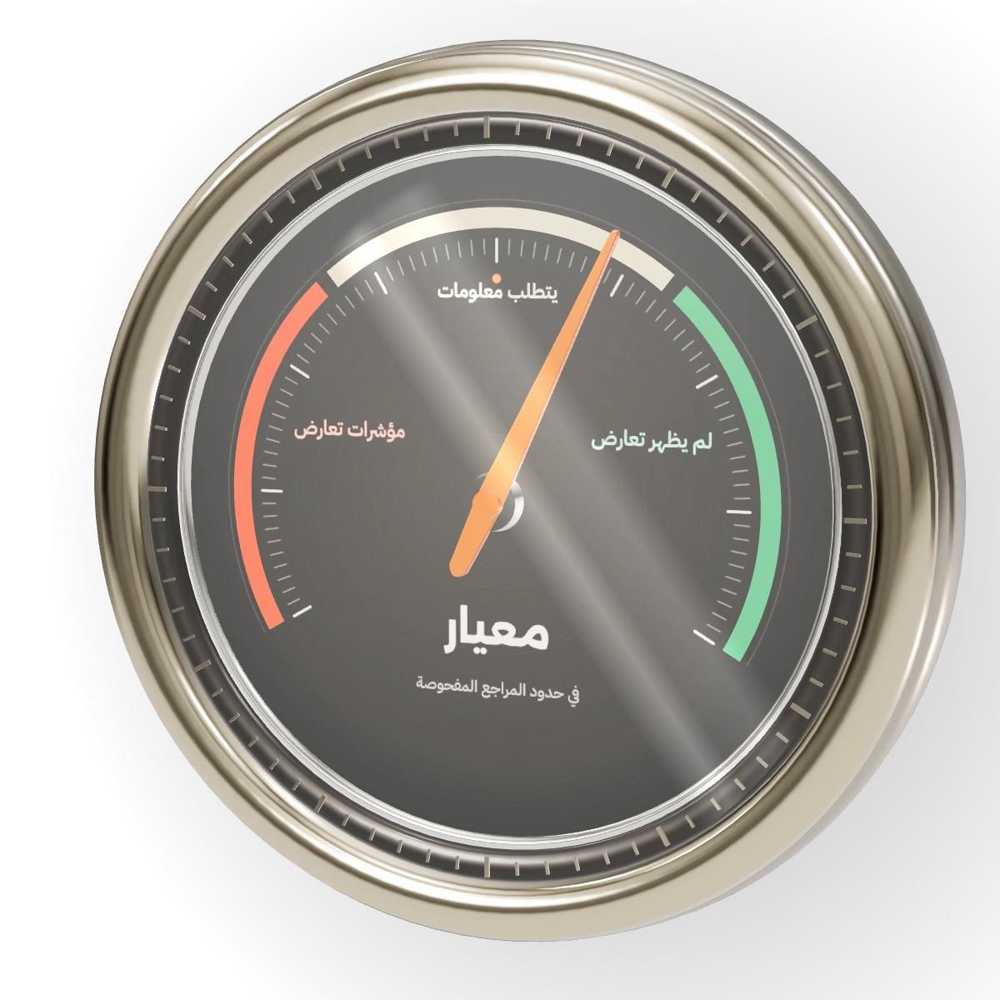

معيار
انشر بوعي.
راجع نصك وافهم المراجع النظامية المرتبطة به قبل النشر.

قراءة هادئة قبل النشر.
- يبحث في المراجعداخل متصفحك، ويختار المواد المرتبطة بنصك.
- لم يظهر تعارضفي حدود المراجع المفحوصة، لا أكثر.
- يتطلب معلومات إضافيةأو لا تكفي المراجع المتاحة للتقييم.
- مؤشرات تعارضمع المادة، والاقتباس الأصلي، وصياغة بديلة.
- والقرار لك.معيار مساعد للمراجعة، وليس حكمًا قانونيًا نهائيًا.
المسار الأول
افحص نصك عبر API
بمفتاحك لدى OpenAI أو Claude. يبحث معيار في المراجع داخل متصفحك، ثم يرسل المقاطع ذات الصلة فقط.
أنشئ مفتاحًا لدى Anthropic · يبقى في هذه الصفحة فقط، ويُمسح عند إعادة التحميل.
ما المفتاح؟ وكيف تُحتسب التكلفة؟
المفتاح يسمح لهذه الصفحة بإرسال طلبك إلى المزود عبر حسابك أنت. يُنشأ من لوحة المطورين لدى المزود، ويحتاج غالبًا إلى تفعيل الفوترة أو إضافة رصيد.
فوترة API منفصلة عن اشتراك ChatGPT أو Claude؛ الاشتراك وحده لا يكفي. كل طلب يُحتسب على حسابك لدى المزود.
لا يُحفظ المفتاح في المتصفح ولا في الروابط، ولا يُرسل إلا في ترويسة المصادقة إلى عنوان المزود الرسمي. يختار معيار النموذج تلقائيًا.
المسار الثاني
استخدم معيار داخل مساعدك
دون مفتاح API: أرفق المراجع والبرومبت في ChatGPT أو Claude.
-
حمّل الملفات وانسخ البرومبت.
ستة ملفات PDF والبرومبت، في ملف واحد.
-
فك ضغط ZIP، وأرفق ملفات PDF والبرومبت في دردشة ChatGPT أو Claude.
-
اكتب النص الذي تريد فحصه أو السؤال الذي تريد طرحه.
تظهر الإجابة داخل المساعد الذي اخترته، ويخضع الاستخدام لحدود حسابك وخطته. معيار لا ينقل الملفات تلقائيًا، ولا تعود الإجابة إلى هذه الصفحة.